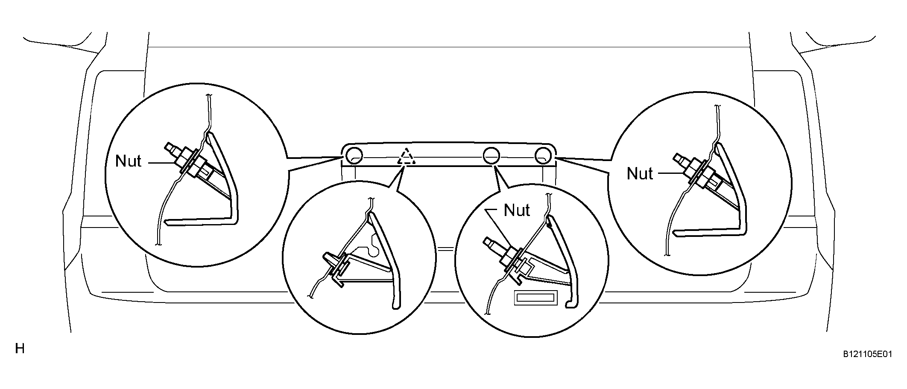
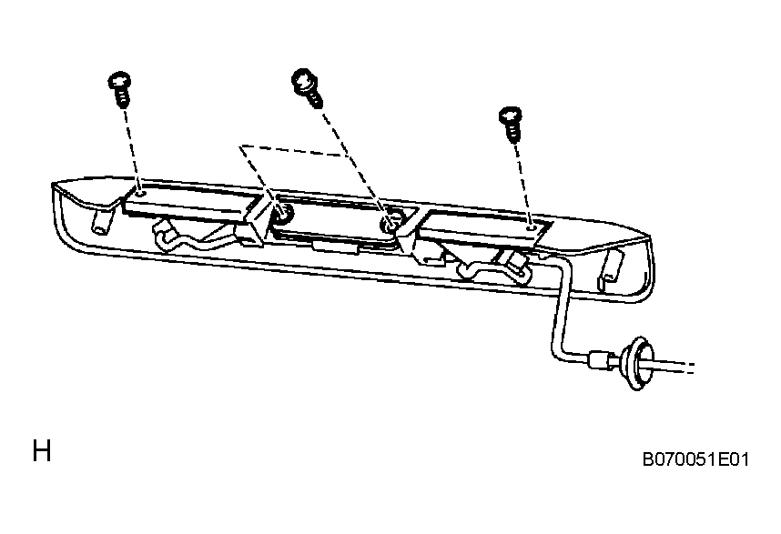

Back Door Outside Garnish: Removal
REMOVE BACK DOOR TRIM BOARD (See
DISASSEMBLY
)
REMOVE BACK DOOR OUTSIDE GARNISH
Remove the 3 nuts and detach the clip. Then remove the garnish.
Fig 1: Detaching Clip

Courtesy of © TOYOTA, LICENSE AGREEMENT TMS1002
Remove the 4 screws and light set rear.
Fig 2: Removing Screws And Light Set Rear

Courtesy of © TOYOTA, LICENSE AGREEMENT TMS1002